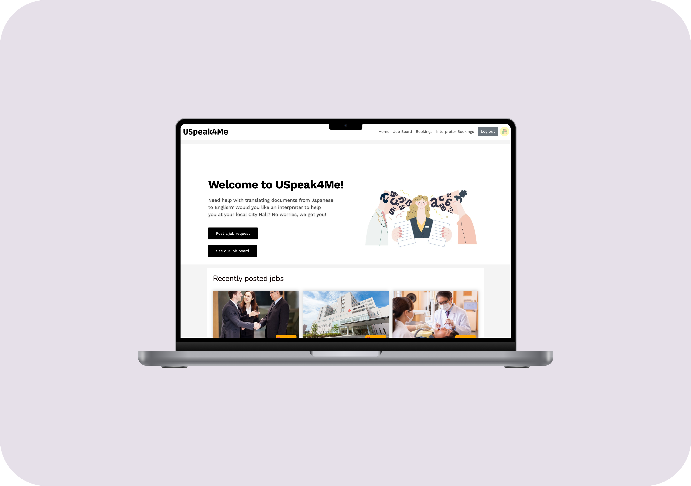
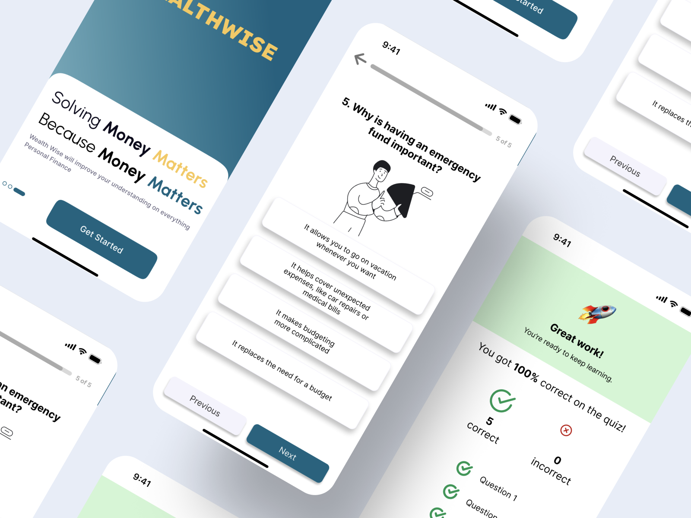

Projects 👩🏻💻




Developed during my time at Japan Product Camp 2024, WealthWise is a fintech product concept that gamifies financial learning for young professionals in Japan. As part of a team, I contributed to the UI design, collaborating in Figma, conducting user research, and developing WealthWise's product strategy.